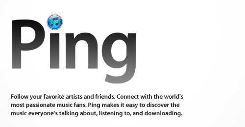
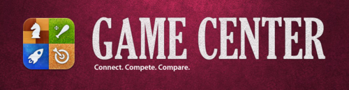

Eylül ayının başında yapılan ve genellikle Apple’ın yeni iPod modellerini tanıttığı keynote’da bu yıl yeni iPod Touch ve Nano’dan başka yazılım ürünleri iTunes 10 ve iOS 4.1’de tanıtıldı.
Apple geçmişte her zaman yeni ürünler ile teknoloji dünyasını farklı yönlere taşırken yavaş yavaş gelişmelerin gerisinde kaldığını ve hareketin içine sonradan katıldığını keynote’da tanıttığı sosyal ağ uygulamaları Ping ve Game Center’da görmekteyiz. Bu iki uygulama bana kalırsa yıllar önce iTunes’a ve iPhone’a eklenmiş olmalıydı.
iTunes 10’dan genel olarak beklentiler neydi bilemiyorum ama sosyal network Ping’in içine entegre edildiği bu yeni sürümün de Cocoa framework’ü ile değil eski 32 bit Carbon ile yazıldığını görmek beni şaşırttı. Buna rağmen kısmende olsa performans artışı sağlanmış. iTunes 10’un en önemli özelliği olarak Ping vurgulandı. Tamamıyla monochrome şekilde düzenlenmiş arabirim ve büyük tartışma yaratan yeni iTunes ikonu ise dikkati çeken en önemli özelliklerden.
Sosyal ağları uygulamalarının içine katmakta çok geç kaldığını yeni farkeden Apple, yerleşmiş uygulamaları kullanarak başarılı olmak yerine çok büyük bir risk alarak kendi uygulamalarını geliştirmeye çalışıyor. Ping’in şimdilik hiç bir özelliği ve albenisi yok. Beğendiğiniz şarkıcı ve grupları takip etme seçeneği sadece Ping uygulamasına katılan sanatçılar için gerçekleştirilebiliyor.
Bunun yerine iTunes, Last.fm ile entegre edilebilirdi. Tamam, Last.fm’in radyo özelliği telif hakları yüzünden %100 entegre edilemeyebilir belki ama en azında scrobbling, şarkı etiketleme, beğendiğiniz müzik türüne göre yeni sanatçıların tavsiye edilmesi gibi özellikler (Songbird’de olduğu gibi) başarılı bir biçimde entegre edilebilirdi. Bu hali ile Ping’in gelişebilmesi mümkün değil gibi.

Gelelim Game Center’a. Game Center’da Ping gibi çok geç kalmış bir uygulama, bununla birlikte Ping’e göre daha başarılı ve komplike olmuş. Cloudcell, OpenFeint gibi online oyun uygulama sistemleri dağınık ve birbirinden kopuk oldukları için tüm oyun geliştiricilerinin Game Center’a yöneleceklerini düşünüyorum. Game Center şimdilik daha emekleme aşamasında ancak çok hızlı gelişeceğe benziyor.
User Interface grafikleri eleştiri alsada bu basit yapı hoşuma gitti. Henüz çok sayıda Game Center’ı destekleyen oyun olmasa da sayının hızla artacağına eminim.